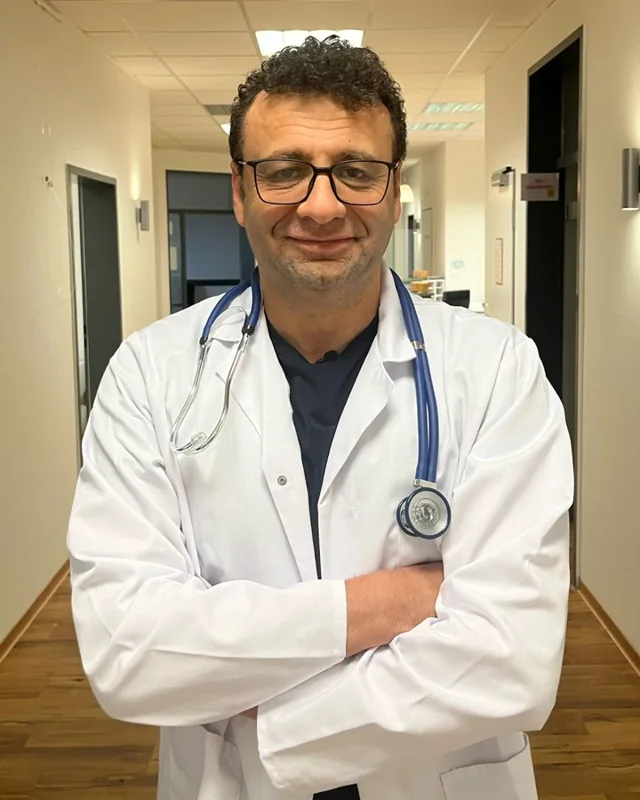
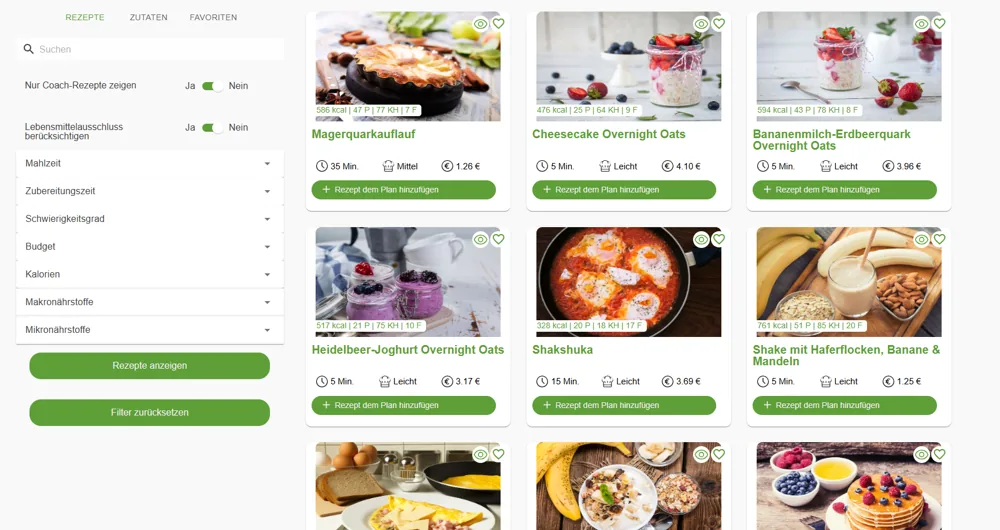
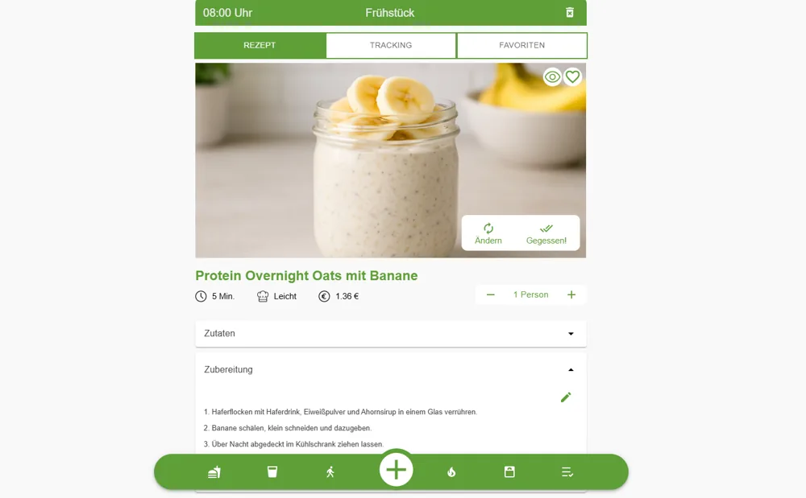
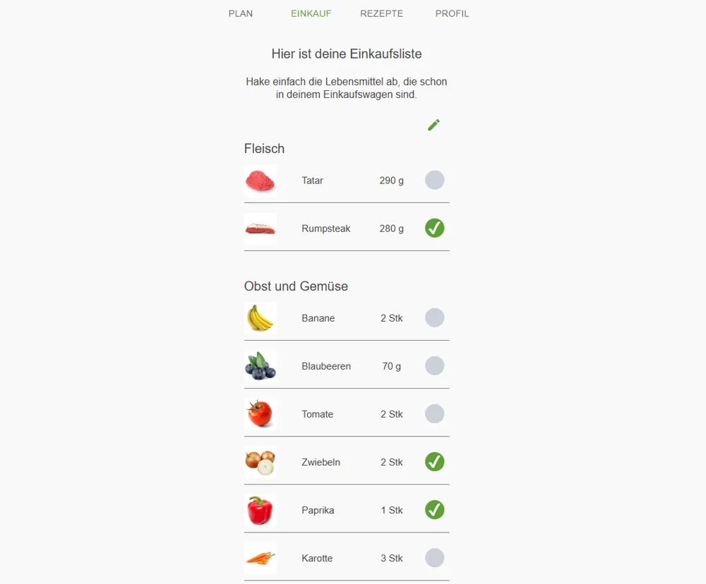
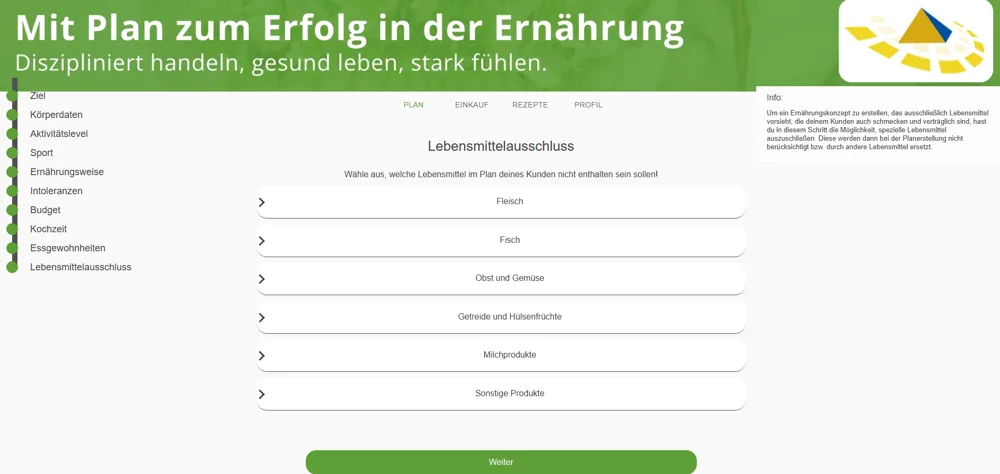
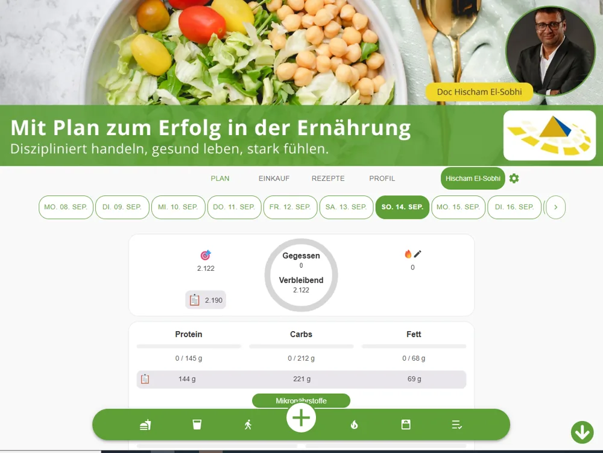
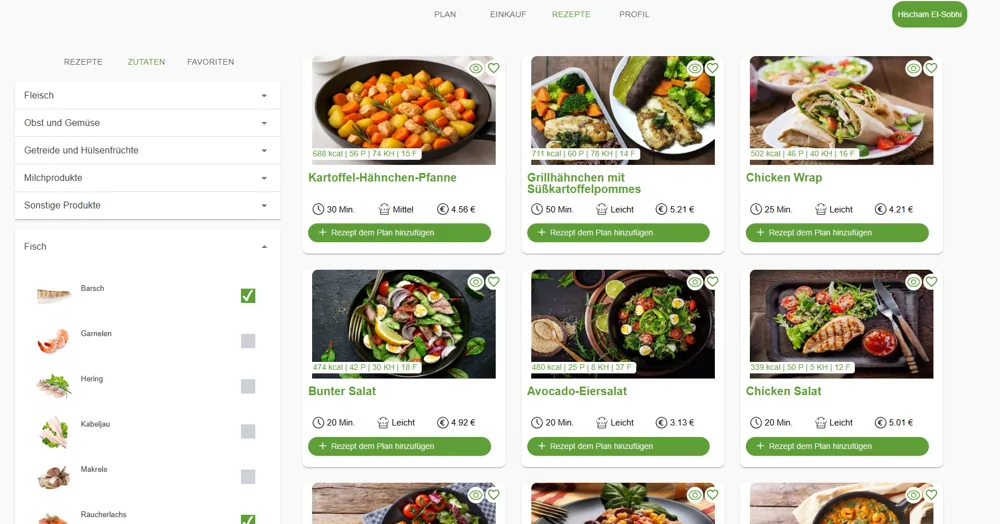
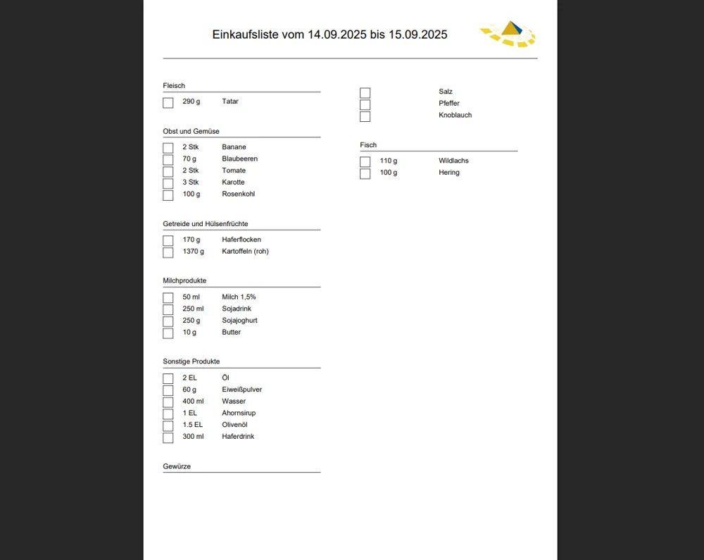
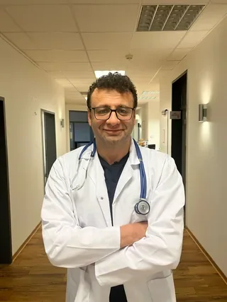

Keine Diät. Eine echte ärztliche Begleitung mit Diagnostik, persönlichem Plan und festen Ansprechpartnern.
Ihr persönlicher Weg ist immer individuell — er entsteht erst aus Ihren Laborwerten und Ihrem Erstgespräch. Genau das ist der Unterschied zu jeder Diät: kein Standard-Plan „für alle", sondern ein Weg, der zu Ihrem Körper passt.

Facharzt · approbiert seit 1998Hischam El-Sobhi begleitet Sie persönlich: ärztlich fundiert, ganzheitlich und mit über zwei Jahrzehnten Praxiserfahrung.
Die meisten schauen nur auf eine Sache — das Essen. Wir betrachten fünf Bereiche und wie sie sich gegenseitig beeinflussen. (Tippen Sie eine Säule an.)
Versorgung statt Verzicht — essen, ohne zu hungern.
Das Fundament: gesunder Darm, gefüllte Speicher.
Die Steuer-Ebene: Cortisol, Insulin, Schilddrüse.
Der Ursprung: Stress & Gewohnheiten.
Zur richtigen Zeit — nicht zu früh, nicht zu viel.
Wir behandeln nicht ein Symptom — wir bringen alle fünf in Einklang. Genau deshalb hält das Ergebnis.
Wir nehmen Ihre Krankengeschichte auf und führen eine umfangreiche Labordiagnostik durch (großes Blutbild), dazu einen Körper-Check (u. a. Stoffwechsel, Körperzusammensetzung, Umfänge). Optional und individuell sinnvoll: Unverträglichkeits-Test (IgG), Darm-/Mikrobiom-Analyse und Hormon-Test.
Hischam El-Sobhi bespricht Ihre Werte mit Ihnen Punkt für Punkt und legt gemeinsam mit Ihnen Ihren individuellen Fahrplan fest. Erst nach diesem Gespräch starten Sie — aus Sicherheit, damit der Weg wirklich zu Ihnen passt.
Auf Ihre Werte zugeschnitten und in klaren Phasen aufgebaut — Schritt für Schritt, mit Empfehlungen, die zu Ihrer Ausgangslage passen.
Über die gesamte Zeit begleiten Sie der Arzt und ein erfahrenes Team. Alle Bausteine dazu finden Sie unten.
Bevor wir starten, messen wir — wir raten nicht. Und das Besondere: Alle Werte ergeben zusammen ein Bild, über das der Arzt persönlich schaut.
Genau das ist der Unterschied: Wir behandeln nicht einen Wert — wir verstehen das ganze System.
Kein Hungern, keine „Giftkur". Eine bewusste Entlastungs-Pause, die Ihren Körper aus dem Dauer-Stress holt — das Fundament, auf dem alles Weitere aufbaut.
Der Körper schaltet um, der Stoffwechsel kommt zur Ruhe. Begleitet mit nährstoffreichen Shakes und echten Lebensmitteln — Sie müssen nichts entscheiden, Sie folgen einfach dem Plan.
Feste Mahlzeiten kommen wieder dazu, mehr Vielfalt. Die meisten verlieren hier schon die ersten Kilos — und spüren deutlich mehr Energie.
Die Entgiftung ist der Einstieg, nicht das Ziel — danach beginnt Ihr persönlicher, dauerhafter Weg.
Aus Ihren Werten ergibt sich, welche Lebensmittel wirklich zu Ihnen passen.
Der Ernährungsmanager macht die Umsetzung im Alltag kinderleicht.
Klare Portionen — satt werden, ganz ohne Kalorien zu zählen.
Ernährung, Training, Tracking und der direkte Draht zu uns — gebündelt in einer App, die ganz auf Sie eingestellt ist. Wir erweitern sie laufend.
Persönlicher Plan, hunderte Rezepte mit Foto und automatische Einkaufsliste.
Trainingspläne nach Muskelgruppe — von Warm-up bis Cool-down, ganz auf Sie zugeschnitten.
Mahlzeiten in Sekunden erfassen — per Foto oder Barcode-Scan.
Kleine tägliche Schritte — mit Feedback direkt an Ihr Team.
Gewicht und Umfänge als klare Verlaufs-Grafik — Ihr Erfolg wird sichtbar.
Ihre Fragen im Alltag — schnelle, persönliche Begleitung.
Kein starrer Plan mit drei Gerichten. Sie bekommen eine eigene App mit einer ganzen Welt an Möglichkeiten — Ihr Plan, Ihre Rezepte, Ihre Einkaufsliste. Alles auf Sie eingestellt.

Statt immer dasselbe: eine große Auswahl an Gerichten, die zu Ihrem Plan passen — jederzeit durchsuchbar.

Zu jedem Gericht alles, was Sie brauchen: Zutaten, Mengen, Zubereitung und die Zeit, die es dauert.

Wählen Sie Ihre Mahlzeiten — die App erstellt daraus die fertige Einkaufsliste, sauber nach Kategorien sortiert.

Der Plan berücksichtigt, was Sie nicht vertragen oder nicht mögen — und Ihre Lebenssituation.



Ein Plan allein verändert nichts — Begleitung tut es. Darum sind wir die ganze Zeit an Ihrer Seite: persönlich, ärztlich, jede Woche.

1:1 · online & vor OrtIn Ihren persönlichen Einzel-Stunden mit Hischam El-Sobhi geht es um das, was Diäten nie anfassen: Stress, Gewohnheiten, Blockaden — den wahren Grund hinter dem Gewicht.
Echte Live-Calls mit dem Arzt — Sie stellen Ihre Frage und bekommen direkt eine Antwort.
Ihre Fragen im Alltag — schnell & persönlich beantwortet.
Sie gehen den Weg mit anderen — gemeinsam dranbleiben.
Wissen zum Nachholen — verständlich erklärt, jederzeit.
Strukturierter Einstieg — Sie wissen vom ersten Tag, was zu tun ist.
Wir fangen Sie auf, bevor alte Muster zurückkommen.
Auf Wunsch persönlich: Akupunktur & Entspannungs-Therapien.
Diagnostik & persönlicher Plan, feste Ansprechpartner und ein Weg, der zu Ihnen passt — über die ganze Zeit.